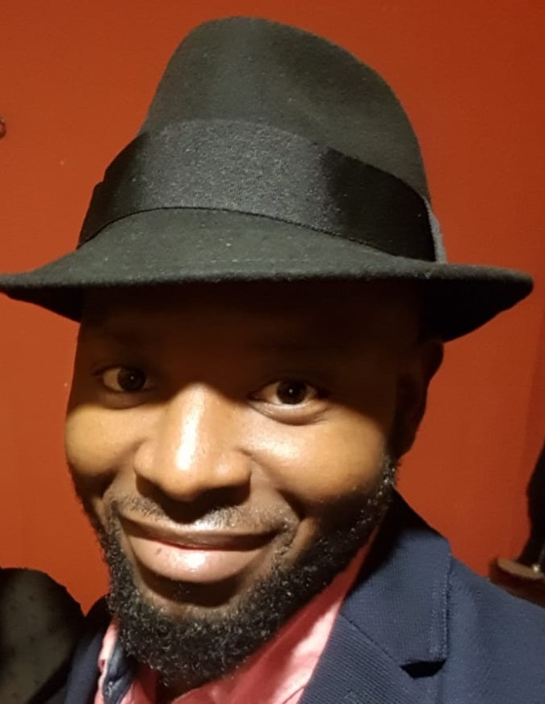

Patrick Souoptallak Tadie

Summary
I am a motivated junior web developer with a solid foundation in HTML and a growing knowledge of front-end development. I am passionate about creating clean, user-friendly websites and eager to continue learning modern web technologies like CSS, JavaScript, and responsive design. I enjoy problem-solving, working on real-world projects, and continuously improving my skills to become a well-rounded developer.
Education
- International Hochschule: computer science 05.2024-
- University of medecine Mainz: 2017-2020
- Gloucestershire University London 2009-2012
Work Experience
- Provided patient care and clinical support in a fast-paced healthcare environment.
- Built small websites for local clients using HTML and basic front-end tools.
Skills
- Basic knowledge of HTML and web structure
- Ability to build simple, responsive pages
- Strong attention to detail and willingness to learn new technologies
My Hobbies
- Exploring new web design trends and building personal projects
- Enthusiastic about web development, often exploring modern design trends and building creative personal projects
Contact me
about me in more details